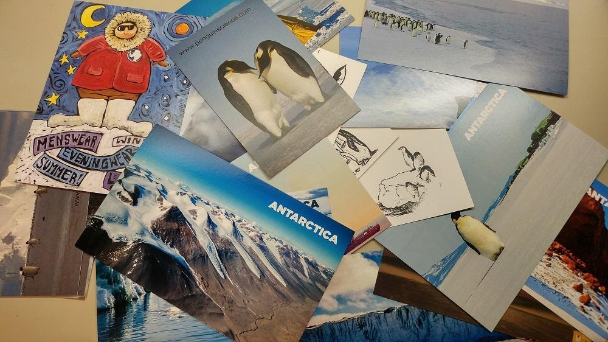
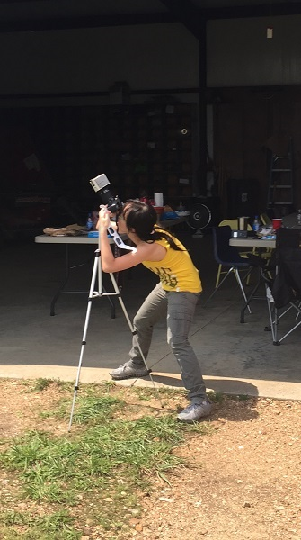
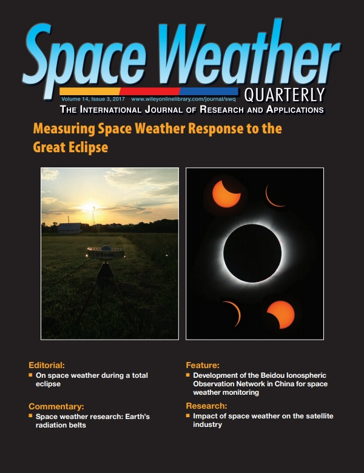
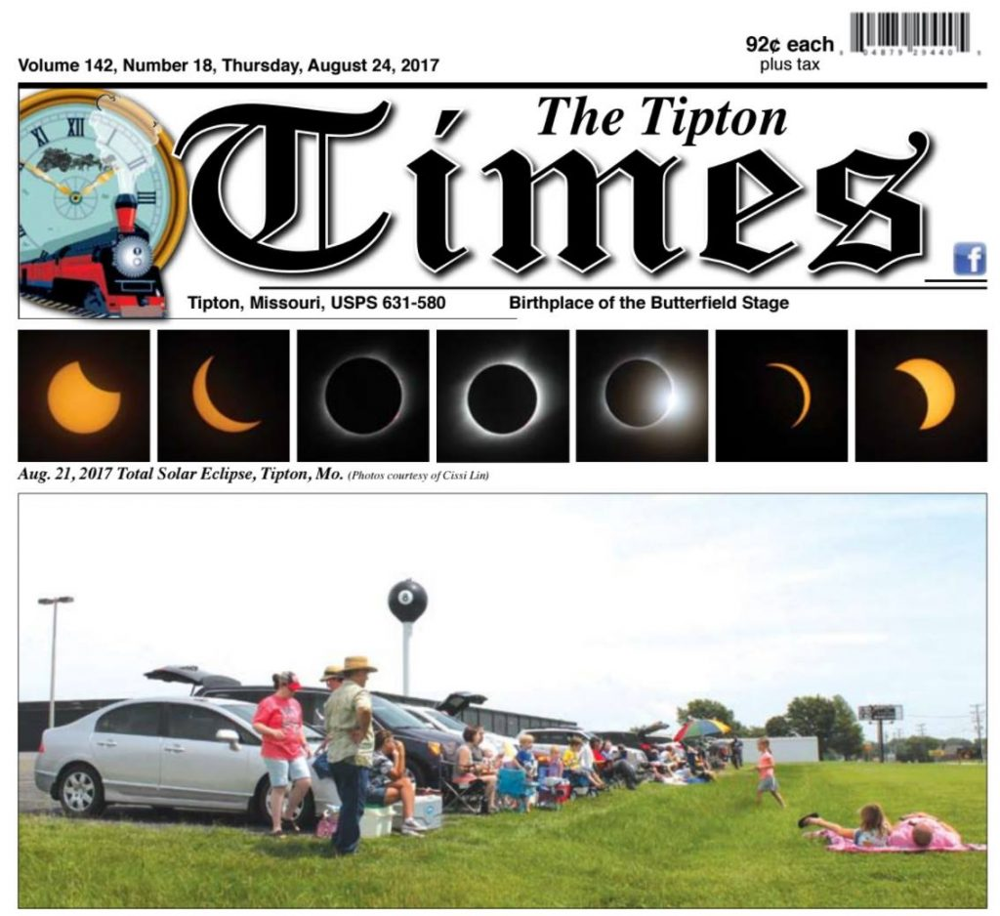
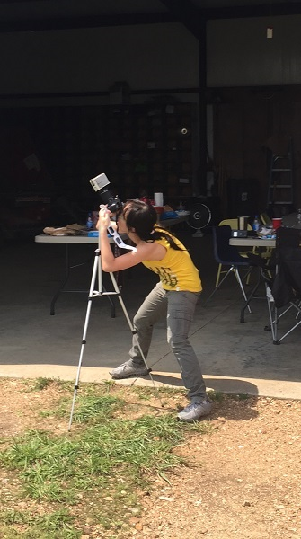
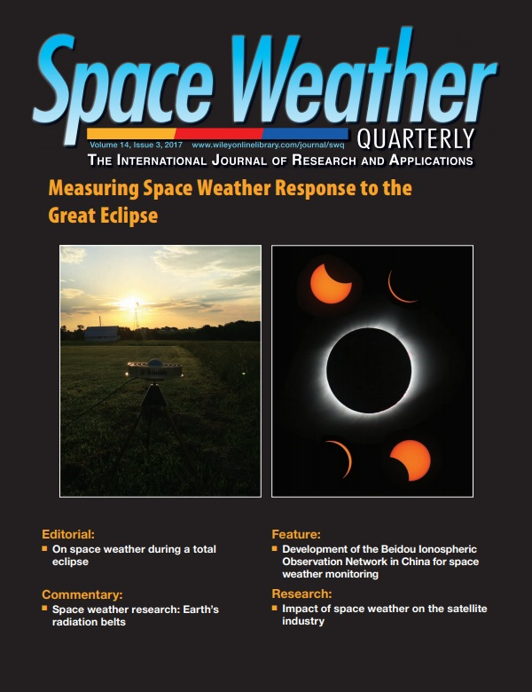
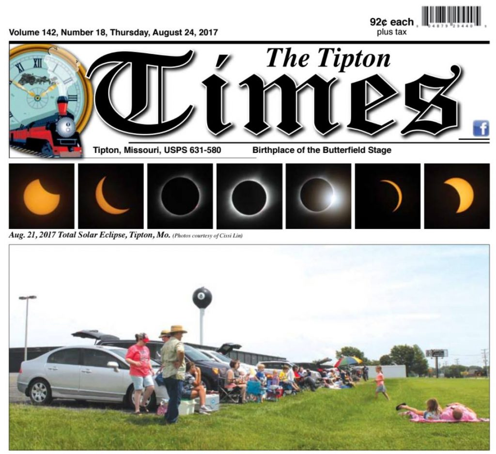

Outreach
Year 2021
“Sunday with Scientists” Series
週日閱讀科學大師
Here is a video of Cissi talking about too many things. lol
我在臺北廣播電臺《公民總主筆》的專訪。
Here is a video of Cissi talking about her Antarctic experiences as a scientist.
我在公視台語台《台灣新眼界》的人物專訪。
Year 2020
Cissi held an outreach event online for the participants to receive postcards from Antarctica.

Year 2017

Cissi’s total solar eclipse photos shot in Tiptop, Missouri, USA in 2017 were featured on the headline of Tipton Times, the cover of Space Weather Quarterly, and in online science forum, Multiverse. You may find the canvas print on the wall in her office at NCU.



“Sunday with Scientists” Series 週日閱讀科學大師
Here is a video of Cissi talking about too many things. lol
我在臺北廣播電臺《公民總主筆》的專訪。
Here is a video of Cissi talking about her Antarctic experiences as a scientist.
我在公視台語台《台灣新眼界》的人物專訪。
Cissi held an outreach event online for the participants to receive postcards from Antarctica.

Cissi’s total solar eclipse photos shot in Tiptop, Missouri, USA in 2017 were featured on the headline of Tipton Times, the cover of Space Weather Quarterly, and in online science forum, Multiverse. You may find the canvas print on the wall in her office at NCU.

